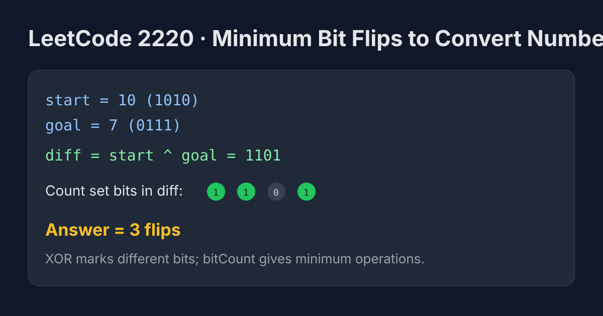

LeetCode 2220: Minimum Bit Flips to Convert Number (XOR + Bit Count)
LeetCode 2220Bit ManipulationXORBit CountToday we solve LeetCode 2220 - Minimum Bit Flips to Convert Number.
Source: https://leetcode.com/problems/minimum-bit-flips-to-convert-number/

English
Problem Summary
Given two integers start and goal, return the minimum number of bit flips needed to convert start into goal.
Key Insight
If a bit is different between the two numbers, that bit must be flipped exactly once. XOR highlights exactly these differing positions: diff = start ^ goal. So the answer is the number of set bits in diff.
Algorithm
1) Compute diff = start ^ goal.
2) Count how many 1-bits are in diff.
3) Return that count.
Complexity Analysis
Time: O(1) for fixed-width integers (or O(w) for w bits).
Space: O(1).
Reference Implementations (Java / Go / C++ / Python / JavaScript)
class Solution {
public int minBitFlips(int start, int goal) {
return Integer.bitCount(start ^ goal);
}
}import "math/bits"
func minBitFlips(start int, goal int) int {
return bits.OnesCount(uint(start ^ goal))
}class Solution {
public:
int minBitFlips(int start, int goal) {
return __builtin_popcount(start ^ goal);
}
};class Solution:
def minBitFlips(self, start: int, goal: int) -> int:
return (start ^ goal).bit_count()var minBitFlips = function(start, goal) {
let diff = start ^ goal;
let ans = 0;
while (diff !== 0) {
ans += diff & 1;
diff >>>= 1;
}
return ans;
};中文
题目概述
给定两个整数 start 和 goal，求把 start 变成 goal 最少需要翻转多少个二进制位。
核心思路
只要某一位不同，就必须翻转一次。用异或 start ^ goal 可以直接标出所有不同位（不同为 1，相同为 0）。因此答案就是异或结果中 1 的个数。
算法步骤
1）计算 diff = start ^ goal。
2）统计 diff 中 1 的数量。
3）返回统计值。
复杂度分析
时间复杂度：固定整数位宽下为 O(1)（一般写作 O(w)）。
空间复杂度：O(1)。
多语言参考实现（Java / Go / C++ / Python / JavaScript）
class Solution {
public int minBitFlips(int start, int goal) {
return Integer.bitCount(start ^ goal);
}
}import "math/bits"
func minBitFlips(start int, goal int) int {
return bits.OnesCount(uint(start ^ goal))
}class Solution {
public:
int minBitFlips(int start, int goal) {
return __builtin_popcount(start ^ goal);
}
};class Solution:
def minBitFlips(self, start: int, goal: int) -> int:
return (start ^ goal).bit_count()var minBitFlips = function(start, goal) {
let diff = start ^ goal;
let ans = 0;
while (diff !== 0) {
ans += diff & 1;
diff >>>= 1;
}
return ans;
};
Comments